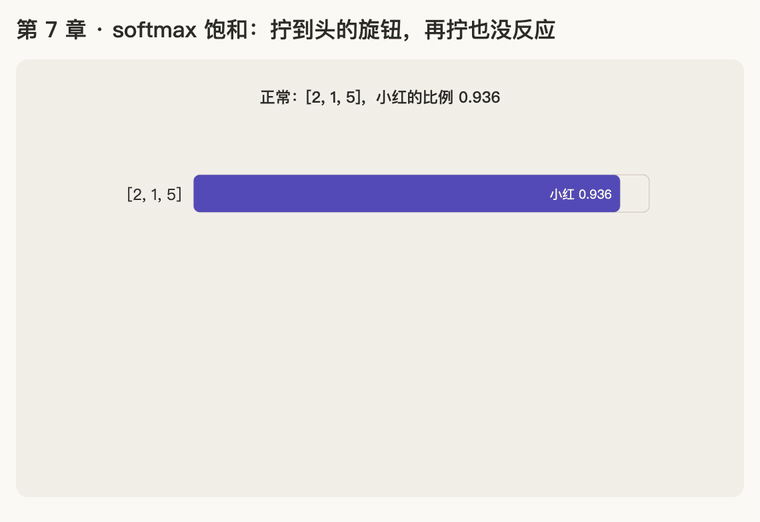

第 7 章 · softmax 饱和
本章回答："拉开差距"如果过头了，会出什么问题？
讲解日期：2026-10-26 · 上一章：第 6 章 softmax（下） · 下一章：第 8 章 除以 √d_k
本章缩写：\(d_k\)：k = key，每个 key 向量有几个数（64）；softmax = soft（柔和的）+ max（取最大）：按大小分比例，不是只挑最大的；exp = exponential（指数）：exp(x) = eˣ；CS336 = Stanford 课程 CS 336（Computer Science 336，Language Modeling from Scratch）；代码里的名字（PyTorch、nn.Linear等）见附录"PyTorch 对照"。全部缩写见 附录 · 缩写与术语表
讲解
放大过头
分数 [2, 1, 50]：\(e^{50}\) 大约是 5 后面跟 21 个 0，softmax 比例 ≈ [0, 0, 1]，变成"只看一个，其他完全不看"。
为什么这是坏事：模型学不动
模型一开始什么都不懂，分数是乱的。它学习的方法是一点一点微调：
把某个分数调高一点 → 看结果有没有变好 → 变好就继续往这个方向调
就像调收音机旋钮：转一点，听声音清不清楚，再决定往哪边转。
把小红的分数调高 1 分：
| 情况 | 调之前 | 调之后 | 变化 |
|---|---|---|---|
| 正常：[2, 1, 5] → [2, 1, 6] | 0.936 | 0.976 | 变了 0.04，看得出来 |
| 过大：[2, 1, 50] → [2, 1, 51] | 1.000 | 1.000 | 完全没变 |
比例已经被推到尽头（100%），再怎么调分数都纹丝不动，模型看不出哪个方向更好，学不动了。就像音量旋钮已经拧到最大，再拧也听不出区别。
这叫 softmax 饱和（saturation），"满了、到头了"的意思。
饱和 ≠ 过拟合
| softmax 饱和 | 过拟合 overfitting | |
|---|---|---|
| 像什么 | 学生学不进去：怎么练成绩都不动 | 学生死记硬背：练习题全对，新题就不会 |
| 模型的表现 | 训练时结果一直不变好 | 训练数据上很好，新数据上很差 |
| 原因 | 分数太大，调了没反应，没有学习信号 | 把训练数据的细节背下来了，没学到通用规律 |
| 方向 | 学得太少（学不动） | 学得太死（学过头） |
[0, 0, 1] 看起来"非常绝对"，像是模型太自信，所以容易联想到过拟合。但这种绝对是被过大的分数硬推出来的，不是从数据里学出来的。
术语就叫"饱和"，不是"过饱和"（过饱和是化学用词）。
动画演示：调高 1 分，比例变多少；曲线越往右越平

可交互版：animations/07-saturation.html（要能点按钮、拖滑块，需要用本地服务打开，见 animations/README.md"跑起来看"）。
怎么看：
- [2, 1, 5] → [2, 1, 6]：小红的比例 0.936 → 0.976，看得出变化；
- [2, 1, 50] → [2, 1, 51]：1.000 → 1.000，完全没变；
- 小红比例随分数变化的曲线：右边几乎是平的，那里就是饱和区；
- 滑块：拖小红的分数，看"调高 1 分"能让比例变多少。
练习与作答记录
题 1：分数 [2, 1, 50] 时，softmax 比例大概是多少？
作答："这个的确过了，其他几乎没有了。" ✓
题 2：用自己的话说，为什么比例变成 [0, 0, 1] 后模型就很难学习？
作答："全是 0 0 1 以后，就没有足够落差去计算差距，模型容易过拟合到样本集上。"
点评：前半句 ✓（调分数比例不变，没有学习信号）。后半句 ✗：饱和导致的是"学不动"，不是过拟合，两者方向相反。
题 3：A 训练 99%、新句子 50%；B 怎么调结果都不变。各是什么？
作答："A 是过拟合，B 是过饱和。" ✓（用词更正为"饱和"）
本章复习卡片
R12 什么是饱和 · R13 饱和 vs 过拟合（见 review.md）
附录 · 延伸阅读
留给以后深入学习用，不影响本章主线。★ 是建议先读的。
- 本地论文的文本版在materials/text/papers/，表里的行号就是指这个文本版。
- CS336 handout 在cs336-spring2025/materials/text/cs336_spring2025_assignment1_basics.txt。
推荐阅读
| 读什么 | 读哪里 | 读它为了什么 |
|---|---|---|
| ★ Wortsman et al. 2023, Small-scale Proxies for Large-scale Transformer Training Instabilities | §3.1.1 Attention logit growth（L258 起） | 真实大模型里的饱和：分数越训越大，训练崩掉；用 qk-layernorm 治（阶段 B，里程碑 T-M4） |
| Attention Is All You Need | L184–L188 | 论文自己说的饱和：分数大了，softmax 进入"梯度极小"的区域 |
| Goodfellow《Deep Learning》 | §6.2.2.3 Softmax Units（饱和的讨论）、§5.2 容量、过拟合和欠拟合 | 区分"饱和"和"过拟合"两个概念 |
数学原理
- softmax 的导数：某个比例对某个分数的变化速度，等于 \(p_i(\delta_{ij} - p_j)\)。当某个比例接近 1、其他接近 0 时，这个值几乎全是 0，也就是"推不动"。这就是饱和的数学本质。
- 梯度下降（主线 ② 会细讲）：参数每次往"让 loss 变小"的方向挪一小步。梯度接近 0 时，就挪不动了。
- 过拟合：训练集上很好、新数据上很差，是"学得太死"的问题，和饱和（"推不动"）是两回事。
公式清单
| 公式 | 意思 |
|---|---|
| \(\frac{\partial p_i}{\partial s_j} = p_i(\delta_{ij} - p_j)\) | softmax 的导数；\(\delta_{ij}\)：i = j 时为 1，否则为 0 |
| \(p \approx [1, 0, 0] \Rightarrow \frac{\partial p}{\partial s} \approx 0\) | 饱和时梯度几乎为 0 |
| \(\theta \leftarrow \theta - \eta \nabla_\theta L\) | 梯度下降，η 是学习率 |
PyTorch 对照：把本章的数字用代码算一遍
代码在仓库本地
transformer-deep-dive/solutions/chapter-code/ch07_saturation.py，配套测试tests/test_ch05_08.py（在线版不带代码文件，下面摘了关键几行）。Mac 上直接能跑，不需要 GPU：
bash cd transformer-deep-dive/solutions/chapter-code uv run python ch07_saturation.py
讲义 ↔ 代码：
| 讲义 | 公式 / 说法 | PyTorch 写法 | 跑出来 |
|---|---|---|---|
| 放大过头 | [2, 1, 50] | torch.softmax |
[0, 0, 1] |
| 调高 1 分 | 5 → 6；50 → 51 | 改分数再 softmax | 0.936 → 0.976；1.000 → 1.000（没变） |
| 学不动 = 斜率是 0 | 调一点，比例变多少 | torch.softmax(s, -1)[2].backward() |
5 分时 0.0597；50 分时 0 |
| 另一种过头：溢出 | \(e^{100}\) | torch.exp(100.) |
inf，手写 softmax 得 nan |
关键几行：
s = torch.tensor([2.0, 1.0, 50.0], requires_grad=True)
torch.softmax(s, -1)[2].backward()
s.grad[2] # 0：调了也没反应 = 没有学习信号
torch.exp(torch.tensor(100.0)) # inf：float32 装不下
torch.softmax(torch.tensor([2.0, 1.0, 100.0]), -1) # 自带版不会坏
代码里才看得到的：
- 饱和就是斜率（梯度）≈ 0：用第 5 章的
backward()直接算"调高一点，比例变多少"。5 分时还有 0.06，50 分时正好是 0。训练是照着这个斜率调参数的，它没了就学不动。 - float32 最大只能表示约 \(3.4 \times 10^{38}\)，\(e^{89}\) 就超了，变成 inf（infinity：无穷大）。手写的
e / e.sum()变成 inf ÷ inf = nan。 torch.softmax内部先减掉最大值：分子分母同时除以 \(e^{\max}\)，结果不变，但最大的那个变成 \(e^0 = 1\)，永远不会溢出。这就是第 6 章说"不要手写"的原因。